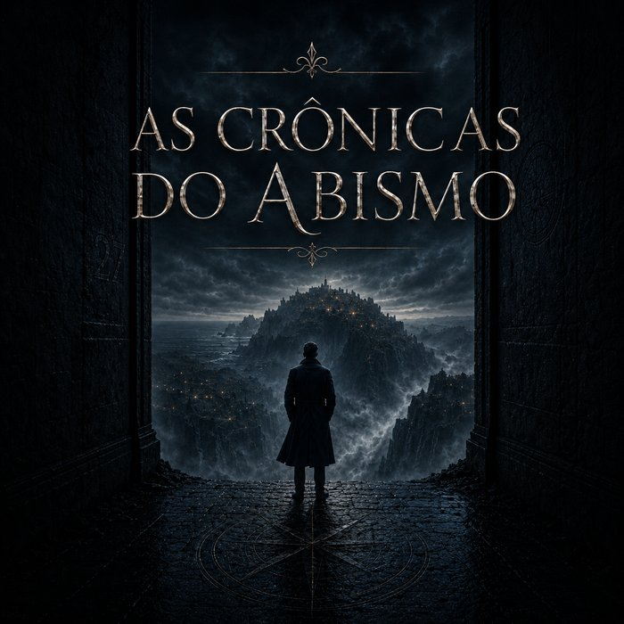
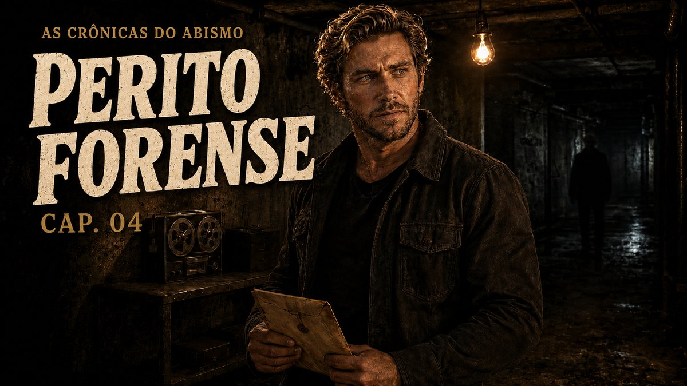

O LIVRO


Uma travessia que Chris não devia ter aceitado. A água carrega mais peso do que deveria, e a primeira regra do Núcleo nunca explica o porquê — só o preço de ignorá-la.

A bordo do St. Irvine, o tempo não anda direito. Os corredores se repetem, as vozes soam familiares demais, e Chris começa a duvidar de quem, exatamente, embarcou com ele.

Uma cidade pequena que parecia estar esperando. Um aviso que ninguém quis levar a sério. Chris sai dessa noite carregando algo que não estava lá antes.

Em produção — em breve.